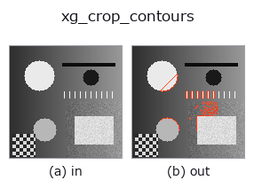

xldgeom op• Data kinds: contour → contour
• Call: fullseye.apply(img, "xg_crop_contours", a=0.5, b=0.5) (the 2-D model is one image plus two scalar knobs a,b∈[0,1])

*The figure is the actual output on a synthetic 128×128 input. Left: input, right: output. Point clouds are drawn as a top-down scatter (brightness = z), 1-D series as a line plot, volumes as the maximum-intensity projection along z, videos as the middle frame, complex images as magnitude; return values that are not pictures are shown as the values themselves.*
Sweeping knob a (0.1 / 0.5 / 0.9, the other knob at its default):
▸ xg_crop_contours: knob a sweep (docs site)
*Knob b does not change the output (measured: identical at 0.1 / 0.5 / 0.9).*
Stages (the ops that come before → this op, left to right):
▸ xg_crop_contours: stages (docs site)
On other images (synthetic scene / photo / coins. Top row: inputs, bottom row: their outputs. Knobs at default):
▸ xg_crop_contours: other inputs (docs site)
Keep only contour points inside the central a-fraction window of the shape.
Keeps only the contour points inside a rectangular window of height a*H and width a*W placed at the image centre (a clipped to [0,1], b unused). The window is the closed interval rows [(0.5-a/2)H, (0.5+a/2)H], columns [(0.5-a/2)W, (0.5+a/2)W]. H, W are taken from the dict's shape; if missing, the maximum coordinate of all points + 1 is used instead.
Returns {"shape": (H, W), "cs": [...]}. Contours with not even 1 point left inside the window are discarded; at a=0 only points lying exactly on the centre lines remain, so it is almost empty, and at a=1 all points remain.
Caution: contours cut by the window are not split. The remaining points are joined as-is into 1 polyline, so every time a contour leaves and re-enters the window, an "edge jumping across the window border" is created, and the area from xg_area_center or the polyline length comes out larger than in reality. To handle the cut correctly, apply r3_clip_region at the region stage and then extract the contours again. Coordinates are (row, col). Selecting whole contours by length is xg_clip_contours.
• gallery2d_geometry family guide
• Sample-data catalog (download URLs / licences) — 2-D uses skimage.data (BSD/public domain) plus synthetic images; 3-D lists download URLs for real data sources (Stanford, PDS, …).
• Operator provenance and references — the sources of the research/methods this op family came from.
• The canonical algorithm (author, year) and its uses are named in the family usage guide above.
The program below has been verified to run (same input as the figure). In Studio's help this block becomes buttons that load and run it on the spot.
threshold 0.50 0.50 sk_find_contours 0.50 0.50 xg_crop_contours 0.50 0.50
▸ Load this pipeline · Load & run
• gallery2d_geometry — py -3.11 examples/gallery2d_geometry.py
contour as input)identity · select_contours · smooth_contours · fit_line_contours · contours_to_region · count_contours · total_length · select_contours_xld
xldgeom)xg_moments · xg_area_center · xg_eccentricity · xg_orientation · xg_elliptic_axis · xg_height_width_ratio · xg_regress_contours · xg_clip_contours
*Provenance: ops.py — 2D operator registry. This per-op note is generated by tools/opdocs.py md (do not hand-edit).*
© 2026 Kazufumi Furuse — Fullseye operator documentation. Licensed under Apache-2.0.